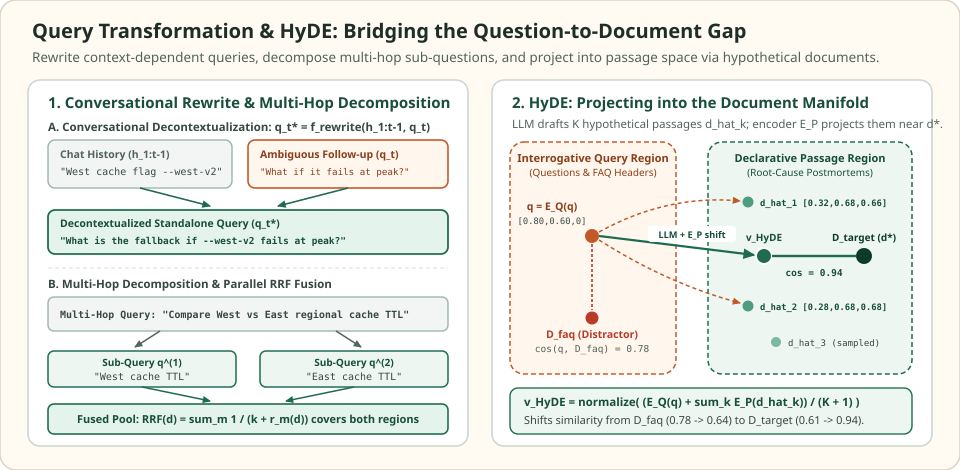

Query transformation and HyDE: bridge the question-to-document representation gap
Every retrieval index assumes the incoming search vector specifies a self-contained information need aligned with how corpus passages are written. Raw user inputs violate that assumption in two distinct ways: conversational follow-ups hide critical entities behind pronouns and ellipsis, while short interrogative questions sit in a syntactic subspace far from dense, declarative technical prose.
Query transformation repairs the input before it ever reaches the index. Conversational rewriting and multi-hop decomposition recover missing entities and split compound questions into parallel sub-queries, while Hypothetical Document Embeddings (HyDE) prompt a language model to draft plausible answer passages first—projecting the search vector directly into the document manifold.
When an underspecified question matches an FAQ header instead of the answer
3D unit embedding space · K = 2 hypothetical passages · cosine inversion
Suppose an engineer asks $q = \text{“Why is my West deploy timing out?”}$. The index contains a generic FAQ title $D_{\text{faq}}$ (FAQ: Why are my service deploys timing out or hanging?) and the actual root-cause postmortem $D_{\text{target}}$ (Connection pool exhaustion under --west-v2 causes 30s gateway timeouts during peak deploy rollouts.).


Model the embedding space along three interpretable axes: $(x_1)$ interrogative symptom phrasing, $(x_2)$ regional deploy context, and $(x_3)$ declarative root-cause mechanics. The raw query vector $\mathbf{q} = [0.80, 0.60, 0.00]$ carries strong interrogative phrasing ($0.80$) and regional context ($0.60$), but zero root-cause vocabulary ($0.00$). Consequently, it aligns more closely with the uninformative FAQ header $\mathbf{d}_{\text{faq}} = [0.96, 0.02, 0.28]$ ($\cos = 0.78$) than with the declarative postmortem $\mathbf{d}_{\text{target}} = [0.20, 0.75, 0.63]$ ($\cos = 0.61$).
With HyDE ($K = 2$), an LLM drafts two hypothetical declarative explanations—$\hat{d}_1$ (mentioning regional connection pool limits and gateway timeouts, $\hat{\mathbf{d}}_1 = [0.32, 0.68, 0.66]$) and $\hat{d}_2$ (mentioning upstream worker saturation during West rollouts, $\hat{\mathbf{d}}_2 = [0.28, 0.68, 0.68]$). Even though neither draft knows the exact flag name --west-v2, averaging their embeddings with $\mathbf{q}$ and normalizing yields $\bar{\mathbf{v}}_{\text{HyDE}} = [0.508, 0.711, 0.486]$, flipping the ranking to score $\cos(\bar{\mathbf{v}}_{\text{HyDE}}, \mathbf{d}_{\text{target}}) = 0.94 > \cos(\bar{\mathbf{v}}_{\text{HyDE}}, \mathbf{d}_{\text{faq}}) = 0.64$.
Comparison of 3D coordinates and exact cosine similarities for the raw query vector, two hypothetical passage embeddings, and the normalized HyDE centroid.
| Vector representation | Coordinates $[x_1, x_2, x_3]$ | $\cos(\cdot, \mathbf{d}_{\text{faq}})$ | $\cos(\cdot, \mathbf{d}_{\text{target}})$ | Top-1 retrieved passage |
|---|---|---|---|---|
| $\mathbf{d}_{\text{faq}}$ (FAQ distractor) | $[0.960, 0.020, 0.280]$ | $1.00$ | $0.38$ | — |
| $\mathbf{d}_{\text{target}}$ (Postmortem answer) | $[0.200, 0.750, 0.630]$ | $0.38$ | $1.00$ | — |
| Raw query $\mathbf{q} = E_Q(q)$ | $[0.800, 0.600, 0.000]$ | $0.78$ | $0.61$ | $D_{\text{faq}}$ (wrong: symptom header only) |
| Hypothetical draft $\hat{\mathbf{d}}_1 = E_P(\hat{d}_1)$ | $[0.320, 0.680, 0.660]$ | $0.51$ | $0.99$ | $D_{\text{target}}$ (declarative root cause) |
| Hypothetical draft $\hat{\mathbf{d}}_2 = E_P(\hat{d}_2)$ | $[0.280, 0.680, 0.680]$ | $0.47$ | $0.99$ | $D_{\text{target}}$ (declarative root cause) |
| HyDE centroid $\bar{\mathbf{v}}_{\text{HyDE}}$ ($K = 2$) | $[0.508, 0.711, 0.486]$ | $0.64$ | $0.94$ | $D_{\text{target}}$ (robust +$0.30$ margin) |
Scroll horizontally to compare the columns. Keyboard: focus the table, then use the left and right arrow keys.
Conversational decontextualization, step-back abstraction, and multi-query RRF
In a multi-turn session with conversation history $h_{1:t-1} = \{(q_1, a_1), \dots, (q_{t-1}, a_{t-1})\}$, a follow-up turn $q_t$ such as "What if it fails during peak?" has near-zero lexical or semantic overlap with the target document because its core subject (--west-v2) lives in turn $t-1$. Conversational query rewriting maps the history and latest turn into a self-contained search string:
replacing coreferences ("it", "that flag", "the second region") with their canonical entity names while stripping conversational filler before invoking the retriever.
When a standalone query is still too narrow, composite, or phrasing-sensitive, three complementary query-side transformations reshape the retrieval call:
- Multi-hop decomposition: A comparative or multi-constraint question $q$ ("Compare the cache TTL in West vs. East during peak hours") asks for facts stored in separate documents. No single chunk embeds well against both regions simultaneously. Decomposition splits $q$ into atomic sub-queries $\{q^{(1)}, q^{(2)}, \dots, q^{(M)}\}$ (for example, $q^{(1)} = \text{“West cache TTL peak hours”}$ and $q^{(2)} = \text{“East cache TTL peak hours”}$), executes $M$ independent searches in parallel, and takes the union of their top candidates.
- Step-back prompting (Zheng et al., 2024): When a query is bogged down in ephemeral instance details (such as a specific timestamp, pod hash, or stack frame), the LLM generates a higher-level step-back question $q_{\text{step}}$ asking for the governing architectural rule or invariant, and retrieves with both the concrete query $q$ and the abstract query $q_{\text{step}}$.
- Multi-query paraphrase expansion: Because dense and sparse retrievers remain sensitive to exact phrasing, generating $M$ diverse reformulations $\{q^{(1)}, \dots, q^{(M)}\}$ of the same intent and fusing their ranked lists $r_m(d) \in \{1, 2, \dots\}$ via Reciprocal Rank Fusion (RRF) stabilizes recall without requiring score calibration across queries:
Any document that consistently ranks near the top across multiple lexical and semantic phrasings accumulates a high sum of reciprocal ranks, whereas a brittle false positive triggered by a single phrasing is diluted by $1/M$.
| Transformation pattern | Input query pathology | Retrieval execution strategy |
|---|---|---|
| Conversational rewrite ($q_t^*$) | Pronouns, ellipsis, or implicit references to earlier chat turns ($h_{1:t-1}$) | Single retrieval call using the decontextualized standalone query $q_t^*$ |
| Multi-hop decomposition | Comparison or conjunction across $M$ distinct entities or sub-questions | Parallel retrieval across $\{q^{(m)}\}_{m=1}^M$ with balanced per-subquery quotas or RRF |
| Step-back prompting ($q_{\text{step}}$) | Over-specific error log or edge case that misses general system design rules | Dual retrieval combining results from the specific query $q$ and abstract rule query $q_{\text{step}}$ |
| HyDE ($\bar{\mathbf{v}}_{\text{HyDE}}$) | Short interrogative question separated from declarative answer prose in embedding space | Sample $K$ hypothetical answers $\hat{d}_k$, average their passage embeddings with $E_Q(q)$, and run a single ANN search |
Hypothetical Document Embeddings (HyDE) and the encoder bottleneck
Standard dense retrieval is asymmetric: a query encoder $E_Q$ maps a short question $q$ into $\mathbb{R}^d$, while a passage encoder $E_P$ maps a long declarative document $d$ into $\mathbb{R}^d$. Without massive domain-specific contrastive fine-tuning on $(q, d^+)$ pairs, off-the-shelf embedding models cluster texts strongly by syntactic style and information density—placing questions near other questions and declarative paragraphs near other declarative paragraphs.
Hypothetical Document Embeddings (Gao et al., 2023) convert asymmetric query-to-document search into symmetric document-to-document search. Given a query $q$, an instruction-tuned LLM samples $K$ hypothetical answer passages $\hat{d}_1, \dots, \hat{d}_K \sim p_{\text{LLM}}(\cdot \mid q)$. Each generated draft is embedded with the passage encoder $E_P$ and averaged with the original query vector $E_Q(q)$ to form the unnormalized expectation estimate:
Why does retrieval succeed when $\hat{d}_k$ contains fabricated numbers or guessed details? The passage encoder $E_P$ acts as a lossy semantic bottleneck. A dense bi-encoder maps a $150$-token paragraph into a single vector by pooling across all tokens, which suppresses exact unverified literals while preserving the surrounding domain register, causal connectives ("exhaustion causes timeouts", "connection pool", "rollout"), and technical collocations. Averaging across $K$ independent samples further cancels out high-variance hallucinated specifics while reinforcing the shared semantic direction of a valid answer.
Crucially, because the vector combination happens before indexing lookup, HyDE requires only a single ANN search against the vector database regardless of $K$ (unlike multi-query expansion, which executes $M$ separate vector or hybrid searches).
When query expansion and HyDE hurt retrieval
Query-side LLM transformations are not a free lunch; they fail predictably in two regimes:
- Hallucinated anchor drift on proprietary nomenclature: If a query hinges on an internal code name, private project acronym, or newly minted CVE that does not exist in the LLM's pretraining weights (for example, "How do we remediate Project Kestrel errors?"), a zero-shot HyDE prompt will fabricate a plausible-sounding explanation about an unrelated public library or avian tracking system. The dense encoder $E_P(\hat{d}_k)$ then pulls the centroid $\bar{\mathbf{v}}_{\text{HyDE}}$ away from the true internal subsystem. Retaining $E_Q(q)$ with weight $\alpha \in [0.3, 0.5]$ in the weighted average $\alpha E_Q(q) + (1-\alpha)\frac{1}{K}\sum_k E_P(\hat{d}_k)$—or pairing HyDE's dense vector with raw-query BM25 lexical matching—prevents total anchor loss.
- Critical-path latency amplification: Generating a $120$-token hypothetical passage with an autoregressive LLM adds $150$–$500\text{ ms}$ of time-to-first-retrieval before the vector database is even queried. To bound latency, production pipelines generate all $K$ hypothetical drafts in a single batched completion call (
n = K) using a small, fast tier model capped at $64$–$96$ output tokens, and bypass HyDE entirely when the incoming query already contains high-specificity identifiers (such as exact CLI flags, UUIDs, or error codes).
import math
def dot(u, v):
return sum(a * b for a, b in zip(u, v))
def norm(u):
return math.sqrt(dot(u, u))
def normalize(u):
n = norm(u)
return [x / n for x in u]
def cosine(u, v):
return dot(u, v) / (norm(u) * norm(v))
# 1. Verify the 3D HyDE manifold projection puzzle
q_vec = [0.80, 0.60, 0.00] # Raw interrogative query E_Q(q)
d_faq = [0.96, 0.02, 0.28] # Generic FAQ header distractor
d_target = [0.20, 0.75, 0.63] # Declarative root-cause postmortem
d_hat_1 = [0.32, 0.68, 0.66] # Hypothetical passage 1: E_P(d_hat_1)
d_hat_2 = [0.28, 0.68, 0.68] # Hypothetical passage 2: E_P(d_hat_2)
raw_cos_faq = cosine(q_vec, d_faq)
raw_cos_target = cosine(q_vec, d_target)
assert round(raw_cos_faq, 2) == 0.78
assert round(raw_cos_target, 2) == 0.61
assert raw_cos_faq > raw_cos_target # Raw query ranks the FAQ distractor #1
def hyde_centroid(q_v, hyp_vectors):
K = len(hyp_vectors)
mean_vec = [
(q_v[i] + sum(h[i] for h in hyp_vectors)) / (K + 1)
for i in range(len(q_v))
]
return normalize(mean_vec)
v_hyde = hyde_centroid(q_vec, [d_hat_1, d_hat_2])
assert [round(x, 3) for x in v_hyde] == [0.508, 0.711, 0.486]
hyde_cos_faq = cosine(v_hyde, d_faq)
hyde_cos_target = cosine(v_hyde, d_target)
assert round(hyde_cos_faq, 2) == 0.64
assert round(hyde_cos_target, 2) == 0.94
assert hyde_cos_target > hyde_cos_faq # HyDE flips top-1 to the postmortem answer
# 2. Verify Multi-Query Reciprocal Rank Fusion (RRF, k = 60)
def multi_query_rrf(ranked_lists, k=60):
scores = {}
for ranking in ranked_lists:
for rank_idx, doc_id in enumerate(ranking, start=1):
scores[doc_id] = scores.get(doc_id, 0.0) + 1.0 / (k + rank_idx)
return sorted(scores.items(), key=lambda item: item[1], reverse=True)
# Three query variants: q^(1) is raw, q^(2) and q^(3) are declarative expansions
rankings = [
["D_faq", "D_runbook_east", "D_metrics", "D_target"], # q^(1): D_faq ranks 1, D_target ranks 4
["D_target", "D_metrics", "D_runbook_west", "D_faq"], # q^(2): D_target ranks 1, D_faq ranks 4
["D_target", "D_runbook_west", "D_sla", "D_faq"], # q^(3): D_target ranks 1, D_faq ranks 4
]
fused = dict(multi_query_rrf(rankings, k=60))
assert round(fused["D_target"], 5) == round(1/64 + 1/61 + 1/61, 5) # 0.04841
assert round(fused["D_faq"], 5) == round(1/61 + 1/64 + 1/64, 5) # 0.04764
assert fused["D_target"] > fused["D_faq"]
print(f"HyDE cos(v_HyDE, D_target) = {hyde_cos_target:.2f} vs D_faq = {hyde_cos_faq:.2f}")
print(f"Multi-Query RRF: D_target = {fused['D_target']:.5f} > D_faq = {fused['D_faq']:.5f}")Check the operating assumptions
Why does HyDE still improve dense retrieval when the LLM hallucinates an incorrect numeric threshold inside the hypothetical passage?
Dense passage encoders pool token representations across the entire paragraph into a single fixed-width vector, acting as a lossy semantic filter. Even if the LLM guesses "60s timeout" instead of "30s timeout", the surrounding declarative domain vocabulary ("connection pool exhaustion", "gateway timeouts", "rollout") dominates the direction of E_P(d_hat_k) and aligns it with the true postmortem passage.
When should a pipeline prefer multi-query decomposition over HyDE?
Use multi-hop decomposition whenever a query asks to compare or join facts across multiple distinct entities (such as "Compare West vs. East cache TTLs"). Averaging hypothetical documents into a single HyDE vector searches around a single compromise centroid in embedding space, whereas executing separate sub-queries guarantees dedicated top-K retrieval slots for each entity.
Why is retaining the raw query vector E_Q(q) in the HyDE average critical for internal enterprise corpora?
If a query references an internal codename or proprietary flag unknown to the LLM, the generated hypothetical passages may drift toward unrelated public concepts. Including E_Q(q) in the average (and running hybrid BM25 lexical matching on the raw query tokens) anchors the search direction to the user's exact terms.
Sources
- Gao et al.: Precise Zero-Shot Dense Retrieval without Relevance Labels (HyDE), ACL 2023 (hypothetical document generation and passage-space expectation estimation).
- Zheng et al.: Take a Step Back: Evoking Reasoning via Abstraction in Large Language Models, ICLR 2024 (step-back prompting to retrieve high-level principles alongside instance facts).
- Cormack, Clarke & Buettcher: Reciprocal Rank Fusion Outperforms Condorcet and Individual Rank Learning Methods, SIGIR 2009 (rank-based multi-query fusion with constant k = 60).